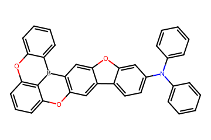

Research Project, January 2026
A complete pipeline for generating novel OLED molecules with desired photophysical properties.
Pre-trains a LLaMA model on 9M SMILES, fine-tunes with property conditioning (SFT), and applies
GRPO reinforcement learning with BERT-based reward models for targeted molecular design.